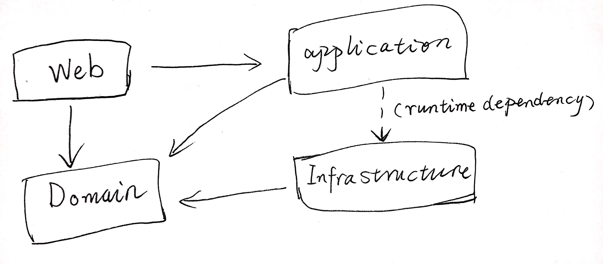

清晰架构实现1: MediatR
当前架构如下所示:

下一个步骤是在 Application 层中实现一些 Handler 用于获取数据. 通过 MediatR 来让 API Controller 向 Handler 发送数据. 要实现这样的结构, 先看看 MediatR 是什么.
MediatR 简介
MediatR 是.NET中的简单中介者模式实现，一种进程内消息传递机制（无其他外部依赖）。 支持以同步或异步的形式进行请求/响应，命令，查询，通知和事件的消息传递，并通过C#泛型支持消息的智能调度。
中介者(Mediator)模式如下图所示:
 .
.
通过中介者模式, 可以将以前杂乱无章的对象间通信进行整合:

更多有关 MediatR 的内容, 详见这个系列教程.
使用 MediatR 库实现对象间通信
过程如下所示:
- 在
Application层工程中引入 MediatR 库MediatR.Extensions.Microsoft.DependencyInjection. - 新建一个
List.cs文件, 用于向上提供获取 Activity List 的服务. 实现 Request 和 Handler 配套方法:
public class ActivityList { public class Query : IRequest<List<Activity>> {} public class Handler : IRequestHandler<Query, List<Activity>> { private readonly DataContext _context; public Handler(DataContext context) { _context = context; } public async Task<List<Activity>> Handle(Query request, CancellationToken cancellationToken) { var list = await _context.Activities.ToListAsync(); return list; } } }
通过上述代码就封装了一个获取 Activity List 的功能类了. 外部向 MediatR 发送对应请求, MediatR 将请求转发给这个类, 然后获取结果.
创建发送请求的 API 控制器
有了 MediatR, 把请求发送者和处理者之间进行解耦, 强类型方式的处理, 在使用者端就非常简单了, 同时把业务也完全封装到了 Application 层中.
API 控制器如下所示:
public class ActivitiesController : BaseAPIController
{
private readonly IMediator _mediator;
public ActivitiesController(IMediator mediator)
{
// 注入 MediatR 对象
_mediator = mediator;
}
[HttpGet]
public async Task<ActionResult<List<Activity>>> List()
{
// 使用者只需要发送对应的请求并等待结果即可. 由 mediator 对请求进行转发.
return await _mediator.Send(new ActivityList.Query());
}
}
然后将 MediatR 注入到依赖管理容器:
// 注入 MediatR 服务.
services.AddMediatR(typeof(ActivityList).Assembly);
其中参数是所有 Handler 存放的 Assembly, 一般都把这些 Handler 类存放到业务逻辑层中, 组织方式上也很灵活, 像上面那样就是包裹在一个类里面, 避免开发者抓破脑袋想名字...
传入 ActivityList 类只是为了方便定位 Application 层工程对应的 Assembly, 实际上传入其中随便一个类都可以.